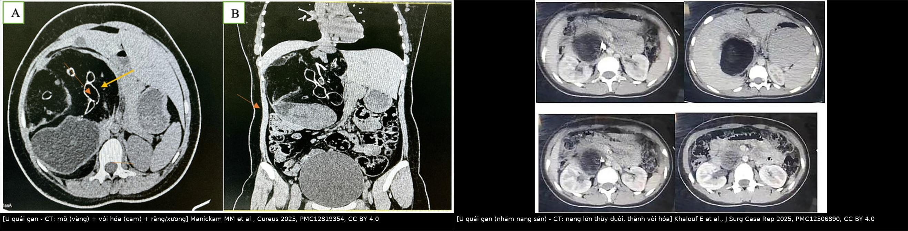
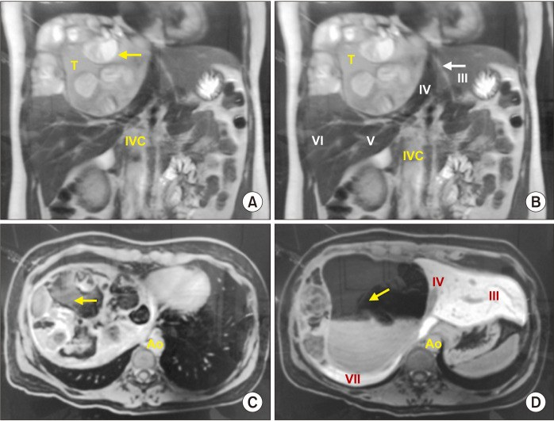
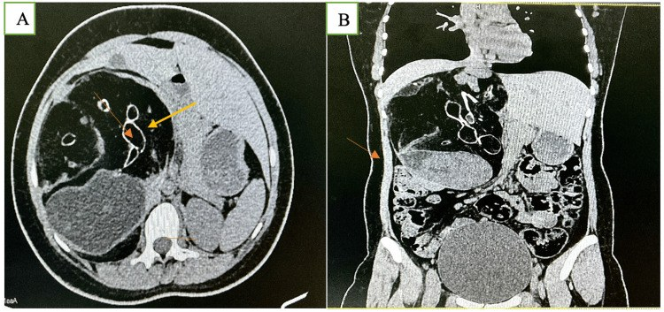
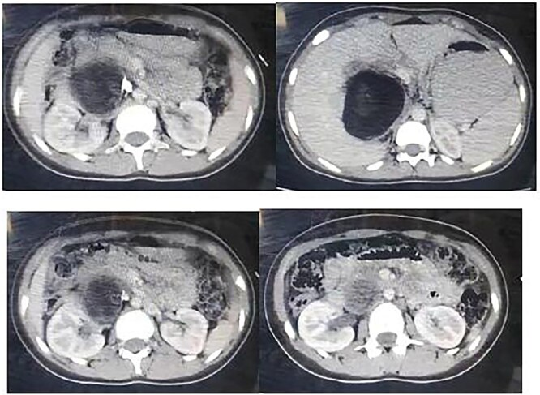
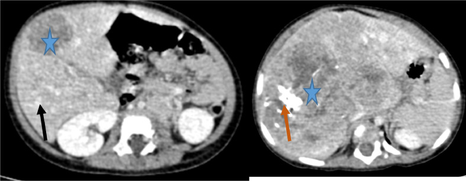

674 — U quái & u tế bào mầm vùng gan ở trẻ: khối có MỠ + VÔI HÓA / Hepatic teratoma & germ cell tumor
Tags: pattern:khoi-gan-nhi pattern:khoi-co-mo-voi-hoa pattern:u-te-bao-mam vung:gan protocol:US-CT-MRI-gan-nhi incidentaloma:khoi-gan-nhi
Mức chắc chắn (certainty): tổng hợp y văn (literature synthesis) — tổng hợp ca nguyên văn có ảnh CC BY/CC BY-NC/CC BY-NC-ND (ghi rõ PMCID + Fig từng ảnh) + đối chiếu bài 665/663/664 trong repo; số liệu lấy trực tiếp từ bài gốc.
1. Tổng quan bệnh học – cơ chế hình ảnh
- U quái gan (hepatic teratoma): u tế bào mầm (germ cell tumor) ngoài sinh dục, cấu tạo từ cả ba lá phôi (ngoài – giữa – trong). Cực kỳ hiếm: < 1% các u gan; tới 2018 chỉ có 11 ca u quái gan ở người lớn được báo cáo (García-Ríos LE et al., Ann Hepatobiliary Pancreat Surg 2021, PMC8639313). U quái trưởng thành (mature) thường gặp ở trẻ trước dậy thì (García-Ríos 2021).
- Phổ tế bào mầm vùng gan: u quái trưởng thành (lành hơn, mỡ + vôi hóa + mô đặc), u quái non (immature), u túi noãn hoàng (yolk sac tumor/endodermal sinus tumor) — ác, tiết alpha-fetoprotein (AFP) rất cao. Vì cùng nguồn gốc tế bào mầm, u túi noãn hoàng gan có thể mọc thành khối đặc–hoại tử khổng lồ ở nhũ nhi (Ez-Zaky S et al., Radiol Case Rep 2024, PMC11419775).
- TẠI SAO hình ảnh đặc trưng là "mỡ + vôi hóa" (vật lý):
- Mỡ trong u quái (mô mỡ trưởng thành) có đậm độ CT −40 đến −120 HU (ngưỡng mỡ trên CT) → giảm đậm độ rõ; trên MRI T1W tăng tín hiệu mạnh và TẮT (mất tín hiệu) khi fat-sat — đây là bằng chứng chốt "thành phần mỡ".
- Vôi hóa/răng/xương (từ lá phôi giữa) → tăng đậm độ như xương trên CT và tối trên mọi chuỗi MRI — dấu hiệu u quái trưởng thành.
- Dịch/nang + mô đặc (mô thần kinh, biểu mô, keratin) giải thích tính không đồng nhất trên mọi chuỗi.
- Ngược lại, ung thư đường mật/sarcoma gan (UESL) hầu như KHÔNG chứa mỡ → "mỡ" là điểm phân biệt mạnh.
- Ngưỡng định lượng bắt buộc:
- U quái trưởng thành: ~10,2 × 5,3 cm, AFP trong giới hạn bình thường (Manickam MM et al., Cureus 2025, PMC12819354); ca khác 7,7 × 9,5 cm, thành nang vôi hóa ở thùy đuôi (Khalouf E et al., J Surg Case Rep 2025, PMC12506890); ca u quái khổng lồ 160 × 180 × 90 mm (García-Ríos 2021).
- U túi noãn hoàng gan: nhũ nhi 14 tháng, AFP > 20.000 ng/mL, βhCG < 2,3 mIU/mL, khối gan thùy phải xâm lấn, hoại tử + vôi hóa, PRETEXT III (Ez-Zaky 2024).
- Đối chiếu u nguyên bào gan (hepatoblastoma): vôi hóa thô 40–50%, AFP > 10.000 ng/mL, nhưng KHÔNG có mỡ (Shahid M et al., World J Hepatol 2025, PMC12400384 — xem bài 665).
2. Mẫu hình + chẩn đoán phân biệt theo cơ chế (gamut)
Gamut "khối gan CÓ MỠ và/hoặc VÔI HÓA ở trẻ":
- Có MỠ + vôi hóa + mô đặc, AFP bình thường: u quái trưởng thành gan (chốt chẩn đoán).
- Có MỠ + AFP rất cao / βhCG cao: u tế bào mầm ác (u túi noãn hoàng, u quái non, hỗn hợp) — khối thường đặc, hoại tử, xâm lấn hơn là có mỡ rõ.
- VÔI HÓA thô KHÔNG mỡ + AFP cao: u nguyên bào gan.
- Nang nhiều vách, ít mạch, KHÔNG mỡ, không vôi hóa: u mô đệm lành (xem 664).
- Giả nang ĐẶC ngấm muộn, không vôi hóa, AFP bình thường: sarcoma phôi gan (UESL) (xem 663).
- Chỉ có MỠ, bờ đều, không vôi hóa: u mỡ/lipoblastoma.
- Nang + nang con + vôi hóa thành, có dịch tễ: nang sán lá gan (hydatid) — cạm bẫy kinh điển, không mỡ (xem 139).
Mnemonic khối gan nhi có mỡ–vôi hóa — "TERATOID": Teratoma · Echinococcus (vôi hóa thành nang) · Rhabdomyosarcoma/đặc · AFP (túi noãn hoàng) · Tumor nguyên bào gan · Omphalomesenteric/ổ nhầy · Immature teratoma · Di căn (neuroblastoma/Wilms).
3. Bảng so sánh phân biệt (ma trận đối chiếu)
| Thực thể (entity) | Hình ảnh điển hình | Chốt vào (rule-in) | Chốt loại (rule-out) | Gợi ý xác nhận |
|---|---|---|---|---|
| U quái trưởng thành gan | Khối hỗn hợp mỡ (−40 đến −120 HU) + vôi hóa/răng + dịch + mô đặc, bờ rõ | MỠ + vôi hóa cùng lúc + AFP/βhCG bình thường | Không mỡ, chỉ vôi hóa rải rác → nghĩ hepatoblastoma/hydatid | CT + MRI fat-sat; cắt u hoàn toàn + mô học 3 lá phôi |
| U túi noãn hoàng gan (ác) | Khối đặc lớn, hoại tử, vôi hóa lấm tấm, xâm lấn | AFP > 20.000 ng/mL + βhCG thấp + khối xâm lấn nhũ nhi | AFP bình thường + mỡ rõ → u quái trưởng thành | AFP/βhCG + glypican-3, SALL4 (+); hóa trị + cắt gan |
| U nguyên bào gan | Khối đặc lớn, vôi hóa thô 40–50%, KHÔNG mỡ | AFP > 10.000 ng/mL + 6 tháng–5 tuổi + vôi hóa thô | Có mỡ rõ → u quái; AFP bình thường → UESL/MH | PRETEXT, sinh thiết; hóa trị tân bổ trợ + mổ |
| U mô đệm lành gan (MH) | Nhiều nang có vách, ít mạch, không mỡ | < 2 tuổi + nhiều nang + ít mạch + AFP thường | Mỡ + vôi hóa rõ → u quái | US/CT/MRI + Doppler; cắt u khi đủ nhu mô |
| Nang sán lá gan (hydatid) | Nang vôi hóa thành, nang con/water-lily, không mỡ | Vỏ tách + nang con + tiền sử dịch tễ | Mỡ trong khối → u quái, không phải sán | Huyết thanh + US/CT; albendazole + PAIR |
| Sarcoma phôi gan (UESL) | Giả nang ĐẶC, T2 sáng, ngấm muộn, không vôi hóa | 6–10 tuổi + AFP bình thường + không mỡ/vôi hóa + ngấm vỏ muộn | Mỡ + vôi hóa thô → u quái | MRI thì muộn 3–5 phút; cắt R0 + hóa trị |

Trái: u quái gan — mũi tên vàng = mỡ, cam = vôi hóa/răng, còn mô đặc [Manickam MM et al., Cureus 2025, PMC12819354, CC BY 4.0]. Phải: ca ban đầu bị chẩn đoán nhầm nang sán, mô học mới ra u quái trưởng thành — nang lớn thùy đuôi, thành vôi hóa [Khalouf E et al., J Surg Case Rep 2025, PMC12506890, CC BY 4.0]. Ảnh ghép letterbox giữ nguyên tỷ lệ.U quái gan — MRI đa tín hiệu

(A, B) coronal T2W và (C, D) axial: khối u nhiều tín hiệu xen kẽ (mỡ/dịch/mô đặc), chèn ép tĩnh mạch chủ dưới (IVC) và động mạch chủ (Ao) — García-Ríos LE et al., Ann Hepatobiliary Pancreat Surg 2021, PMC8639313, CC BY-NC 4.0 (giữ nguyên bản, không ghép).4. Protocol chụp + xử trí
- Xét nghiệm TRƯỚC/đồng thời với hình ảnh: AFP + βhCG (bắt buộc mọi khối gan nhi, đặc biệt khi có mỡ/vôi hóa) — định hướng u túi noãn hoàng/mixed GCT (βhCG cao gợi ý u quái choriocarcinoma). Lưu ý sinh lý: AFP cao sinh lý trong 6 tháng đầu nên đọc thận trọng ở nhũ nhi.
- Siêu âm bụng: đầu tay, xác định khối, dịch, tưới máu; kém nhạy với mỡ/vôi hóa nhỏ.
- CT cản quang: tốt nhất để thấy đậm độ mỡ (−40 đến −120 HU) và vôi hóa cùng lúc; đánh giá xâm lấn, mạch, PRETEXT nếu nghi ác.
- MRI (có fat-sat): chốt thành phần mỡ (T1 tăng → tắt khi fat-sat), đánh giá mô mềm/mạch/kênh mật; giúp phân biệt mỡ thật với xuất huyết/protein cao T1.
- Sinh thiết: cân nhắc kỹ — u quái có thể chứa thành phần chưa trưởng thành, sinh thiết mù dễ lấy mẫu không đại diện; với ca có mỡ + vôi hóa + AFP bình thường, phẫu thuật cắt hoàn toàn (chẩn đoán + điều trị cùng lúc) là lựa chọn.
- Xử trí: cắt u hoàn toàn cho u quái trưởng thành (García-Ríos 2021, Manickam 2025); u tế bào mầm ác/u túi noãn hoàng → hóa trị (đôi khi tân bổ trợ) + phẫu thuật cắt gan (Ez-Zaky 2024). Theo dõi AFP làm dấu ấn tái phát.
- Biến chứng cần nhớ: vỡ u quái → viêm phúc mạc hóa chất (chemical peritonitis) và gliosis/gliomatosis peritonei (cấy mô thần kinh trưởng thành ra màng bụng), đã gặp trong ca u quái khổng lồ (García-Ríos 2021).
flowchart TD
A[Khoi gan nhi co MO va hoac VOI HOA] --> B[AFP + beta-hCG]
B --> C{AFP rat cao hoac beta-hCG cao?}
C -->|Co| D[Nghi u te bao mam AC - tuy noan hoang hoac hon hop]
D --> E[CT MRI danh gia xam lan PRETEXT]
E --> F[Hoa tri tan bo tro roi cat gan]
C -->|Khong| G{MO ro tren CT hoac MRI fat-sat?}
G -->|Co| H[U quai truong thanh - u quai gan]
H --> I[Cat u hoan toan + mo hoc 3 la phoi]
G -->|Khong| J{Voi hoa thuan va AFP cao?}
J -->|Co| K[U nguyen bao gan - PRETEXT + hoa tri + mo]
J -->|Khong| L[Nghi UESL hoac u mo dem lanh - MRI thi muon]
I --> M[Theo doi AFP va tai phat]
5. Biến thể bình thường và cạm bẫy
- Cạm bẫy lớn nhất — u quái trưởng thành bị chẩn đoán nhầm nang sán: ca bé gái 14 tuổi được chẩn đoán ban đầu là nang sán lá gan, chỉ mô học sau mổ mới ra u quái trưởng thành (Khalouf 2025). Vì vậy khối nang gan có mỡ hoặc thành vôi hóa ở trẻ phải nghĩ u quái, đừng gọi sán ngay.
- Mỡ có thể bị bỏ sót trên siêu âm — nếu chỉ có US, dễ gọi "khối đặc/nang hỗn hợp"; CT/MRI mới xác nhận mỡ.
- Vôi hóa đơn độc không đặc hiệu: gặp ở hepatoblastoma (thô 40–50%), sán, u quái, u mạch máu bẩm sinh, di căn xương hóa.
- AFP bình thường KHÔNG loại trừ u quái non/hỗn hợp — mô học mới quyết định; ngược lại AFP rất cao gợi u túi noãn hoàng.
- Đừng nhầm u quái với hepatoblastoma chỉ vì "trẻ nhỏ + vôi hóa" — thiếu mỡ + AFP rất cao mới nghiêng hepatoblastoma/u mầm ác.
- Thỏa mãn tìm kiếm: thấy mỡ rồi dừng lại; phải đo toàn bộ thành phần (mỡ, vôi hóa, dịch, mô đặc) và tìm ổ vỡ/gliosis peritonei vì ảnh hưởng tiên lượng.
6. Tự lượng giá — Blind Quiz
Ca 1 — Nữ 20 tuổi đau bụng âm ỉ 5 tháng, sờ thấy khối hạ sườn phải; AFP bình thường. Đọc CT trước.

- Câu hỏi: Kể các thành phần đậm độ trong khối. Thành phần nào là "chìa khóa"? 3 chẩn đoán phân biệt? Vì sao u ĐẶC có mỡ + vôi hóa mà không phải ung thư?
Bấm để hiện đáp án (findings + chẩn đoán)
- Dấu hiệu (findings): khối lớn ~10,2 × 5,3 cm, bờ rõ, không đồng nhất; mũi tên vàng = mỡ (giảm đậm độ), cam = vôi hóa/răng, phần còn lại là mô đặc; đè đẩy mạch lân cận.
- Chẩn đoán (diagnosis): u quái trưởng thành của gan (mature cystic teratoma) — vì có cả mỡ + vôi hóa/răng + mô đặc (3 lá phôi) với AFP bình thường; mô học sau cắt xác nhận mô trưởng thành từ cả 3 lá phôi.
- Chẩn đoán phân biệt: hepatoblastoma (vôi hóa thô nhưng không mỡ), u mô đệm lành (nhiều nang, không mỡ), nang sán (vôi hóa thành, không mỡ).
- Nguồn ảnh: Manickam MM et al., Cureus 2025, PMC12819354, CC BY 4.0.
Ca 2 — Bé gái 14 tuổi đau hạ sườn phải, ban đầu nghĩ "nang sán gan". Xem CT rồi biện luận.

- Câu hỏi: Vì sao dễ nhầm nang sán? Dấu hiệu nào trên CT giúp nghĩ tới u quái hơn là sán? Cần thêm gì để chốt?
Bấm để hiện đáp án (findings + chẩn đoán)
- Dấu hiệu (findings): khối nang lớn thùy đuôi, kích thước 7,7 × 9,5 cm, thành vôi hóa, kéo dài tới rốn gan — hình thái na ná nang sán vôi hóa.
- Chẩn đoán (diagnosis): u quái trưởng thành của gan — ca này chẩn đoán ban đầu là nang sán lá gan, chỉ mô học sau mổ mới xác nhận; đây là cạm bẫy kinh điển.
- Cần thêm: mô học (thành phần 3 lá phôi) để chốt; nếu CT/MRI thấy mỡ trong khối thì càng nghiêng u quái.
- Nguồn ảnh: Khalouf E et al., J Surg Case Rep 2025, PMC12506890, CC BY 4.0.
Ca 3 — Bé trai 14 tháng chướng bụng, khối gan; AFP > 20.000 ng/mL. Đọc CT trước.

- Câu hỏi: Khối đặc hay nang? Có mỡ không? Với AFP > 20.000 ng/mL + nhũ nhi, chẩn đoán nào và phác đồ ra sao?
Bấm để hiện đáp án (findings + chẩn đoán)
- Dấu hiệu (findings): các khối đặc liên tục thùy phải (sao xanh), chừa phân thùy VI, bờ phân thùy, có ổ hoại tử và vôi hóa (mũi tên cam).
- Chẩn đoán (diagnosis): u túi noãn hoàng của gan (yolk sac tumor) — u tế bào mầm ÁC; AFP > 20.000 ng/mL, βhCG < 2,3 mIU/mL; mô học (+)glypican-3/SALL4 và thể Schiller–Duval. Điều trị: hóa trị tân bổ trợ rồi cắt gan phải.
- Lưu ý phản biện nguồn: ca này ban đầu nghĩ hepatoblastoma do tuổi nhũ nhi — AFP rất cao + đáp ứng hóa trị mới dẫn tới chẩn đoán đúng.
- Nguồn ảnh: Ez-Zaky S et al., Radiol Case Rep 2024, PMC11419775, CC BY-NC-ND 4.0 (giữ nguyên bản).
Bài liên quan chéo
- 600 – Tổng quan Hệ Nhi khoa (bảng DDx khối gan nhi)
- 665 – Khối u gan ở trẻ em: hepatoblastoma, hemangioma, hamartoma & HCC (gamut theo tuổi + AFP)
- 664 – U mô đệm lành của gan ở trẻ (khối nang–đặc, không mỡ)
- 663 – Sarcoma phôi gan chưa biệt hóa (UESL) (giả nang đặc, không vôi hóa)
- 667 – U mạch máu gan ở trẻ & điều trị nội khoa (vôi hóa ở thể bẩm sinh)
- 638 – Khối bìu–tinh hoàn ở trẻ (u tế bào mầm) (u tế bào mầm vùng sinh dục)
- 139 – Sán lá gan (hydatid) (cạm bẫy nang vôi hóa)
- 630 – U bụng nhi: neuroblastoma vs Wilms (di căn gan, vôi hóa)
Ảnh
- Tên file:
674_<slug-bệnh>_<modality>_<PMCID>-FigN-.... Nguồn + giấy phép từng ảnh trongimages/CREDITS.mdvàsources.md. - Ảnh CC BY 4.0 dùng cho ảnh ghép (
composite_teratoma-mo-voihoa-vs-nang.jpg); ảnh CC BY-NC (PMC8639313) và CC BY-NC-ND (PMC11419775) giữ nguyên bản, không ghép. - Không tải Google Images/AuntMinnie; nguồn đóng chỉ dẫn link ở
sources.md.
Không dùng để chẩn đoán độc lập khi chưa có người hướng dẫn.